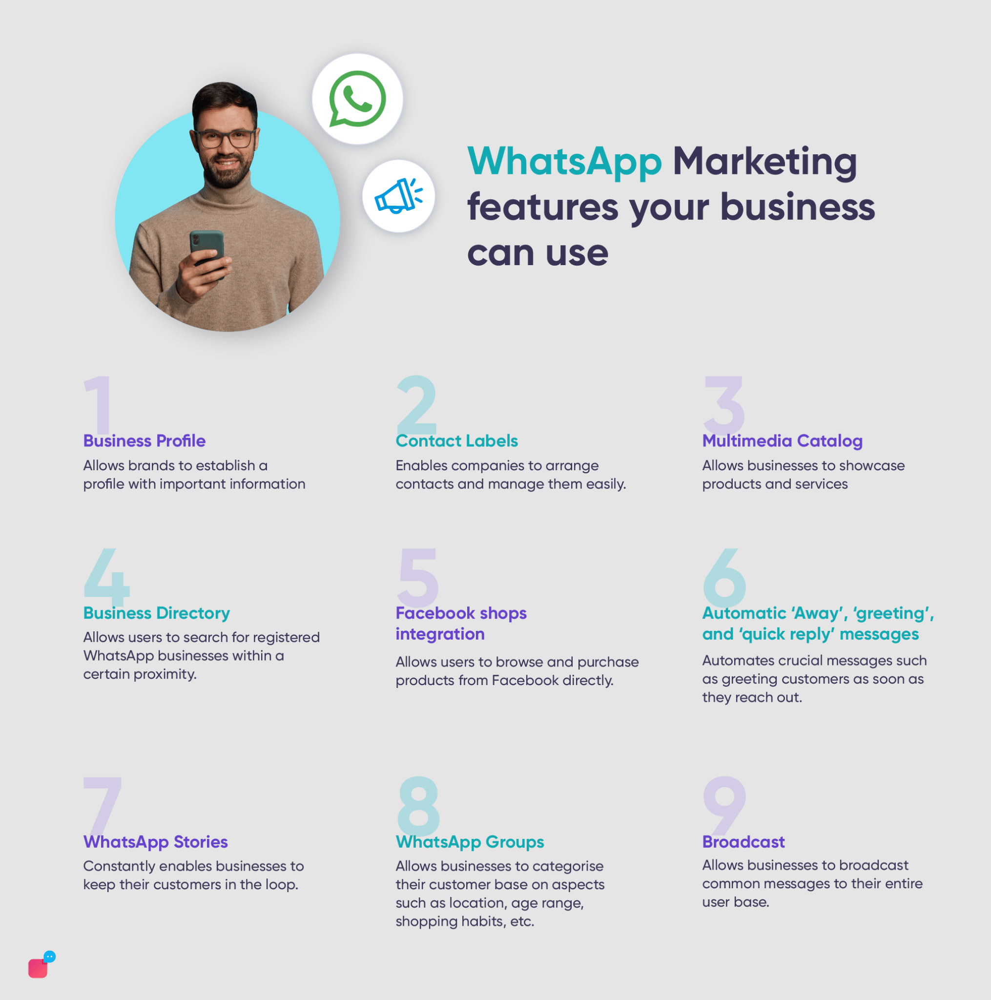

WhatsApp — 2.78 billion MAUs
Why WhatsApp is a Great Social Media Platform for Your Brand
In today’s fast-paced digital landscape, choosing the right social media platform is crucial for brand growth and customer engagement. WhatsApp, with over 2 billion active users worldwide, stands out as a powerful tool for businesses. Here’s why you should consider integrating WhatsApp into your brand strategy:
1. Direct Communication with Customers/High Engagement Rates
WhatsApp allows for real-time, direct communication. Brands can engage in one-on-one conversations, answering queries and providing personalized support, which fosters a stronger connection with customers. This immediacy helps build trust and loyalty, essential components for any successful brand.Messages on WhatsApp have an impressive open rate of over 90%, significantly higher than traditional email marketing. This means your communications are more likely to be seen and responded to, making it an effective platform for promotions, updates, and customer engagement.
2. Rich Media Sharing/Global Reach with Local Touch
WhatsApp supports a variety of media formats, including images, videos, and documents. This versatility allows brands to share engaging content that captures attention and encourages interaction. Whether you’re sharing product photos, tutorials, or promotional videos, WhatsApp makes it easy to deliver visually compelling messages. WhatsApp is used globally, making it ideal for brands with an international audience. It supports multiple languages and is widely accessible, allowing you to connect with customers from different cultures and regions while maintaining a localized approach.